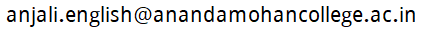

English department at Ananda Mohan College, University of Calcutta, Kolkata
List of teachers
- Shri Sandipan Sen
- Shri Rajiv Kumar Nasker
- (Head of the Department from 1.1.2024 to 31.12.2025) Shri Dibyajyoti Ghosh, Email address:

- Smt. Anjali Gour, Email address: 
Distribution of the syllabus among the teachers
Distribution of exam duties among the teachers
The information on this page was last updated on 1 April 2024.
Official website of Ananda Mohan College is http://anandamohancollege.ac.in